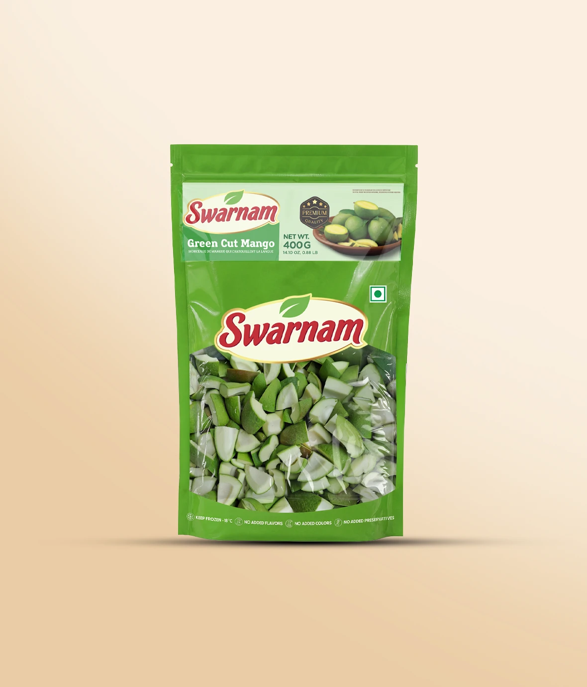

Swarnam Green Cut Mango brings the distinctive tangy flavour of raw mango to your kitchen in a convenient frozen format. A much-loved ingredient in traditional Indian cooking, green mango adds a refreshing sourness to curries, chutneys and other regional preparations. With the mango already cut, Swarnam Green Cut Mango makes it easier to bring this familiar ingredient into everyday cooking while reducing preparation time.
Add green mango to curries to bring a distinctive tangy flavour to the preparation.
Use green mango in selected fish and seafood curries for its characteristic sourness.
Include green mango in chutneys and other traditional accompaniments.
Use it in a variety of regional dishes that call for raw mango.
Already cut for convenient use, helping simplify meal preparation.
Brings the characteristic sourness of green mango to different recipes.
Suitable for curries, chutneys and other traditional preparations.
Reduces the effort involved in cutting and preparing raw mango.
Green cut mango is used in curries, fish preparations, chutneys and other traditional recipes.
Yes. It can be used in selected fish curries that call for the tangy flavour of raw mango.
Yes. It can be included in chutneys and other traditional accompaniments.
No. It comes pre-cut, making it convenient to add to suitable recipes.
Yes. It can be used in a variety of everyday and traditional preparations.
Keep it frozen and follow the storage instructions provided on the product packaging.